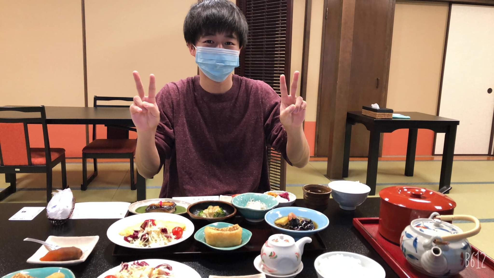

Enishiii

わたしの情報
- 出身地：京都府
- 空手黒帯（初段になってすぐ辞めてしまいました）
- 小中：バレーボール部（小６・中３はキャプテン）
- 高校：サッカー部（バランス考えずに上がってしまう左サイドバックでした）
好きな作家・研究者（カッコ内は好きな本のタイトル）
- 内田樹(『困難な成熟』、『困難な結婚』、『街場の現代思想』、『下流志向』、『寝ながら学べる構造主義』)
- 岡田斗司夫（『僕たちは就職しなくてもいいのかもしれない』、『評価と贈与の経済学』）
- 宮台真司（『経営リーダーのための社会システム論』、『14歳からの社会学』、『宮台教授の就活原論』、『原発社会からの離脱』）
- 山口周（『ビジネスの未来』、『ニュータイプの時代』、『世界のエリートはなぜ「美意識」を鍛えるのか？』）
- 藻谷浩介（『里山資本主義』、『観光立国の正体』）
- 平川克美（『「消費」をやめる』、『小商いのすすめ』、『グローバリズムという病』）
- 國分功一郎（『暇と退屈の倫理学』）
- 浅羽道明（『大学で何を学ぶか』、『教養としてのロースクール小論文』）
- 町田そのこ（『５２ヘルツのクジラたち』、『夜空に泳ぐチョコレートグラミー』、『あなたはここにいなくとも』）
- 川村元気(『百花』)
- 森博嗣（『お金の減らし方』）
お気に入りサイトのリンク集
好きな動画
卒業した中学校の場所